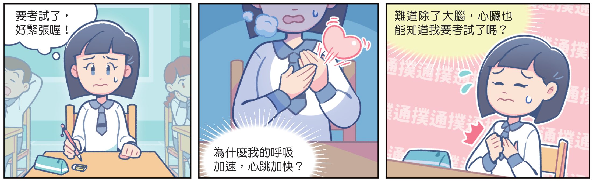

考試前的緊張時刻
為什麼心跳加快了?
明天就是段考了！坐在教室裡，發現自己的心跳加速、呼吸變得又快又急，手心還冒出汗。明明只是坐著不動，身體卻像準備衝刺一樣。怎麼會這樣呢?

⚠️ 影片無法播放，可能原因：
1. 檔名錯誤 (請確認是 1.mp4 不是 1.mp4.mp4)
2. 檔案不在同一個資料夾
1. 檔名錯誤 (請確認是 1.mp4 不是 1.mp4.mp4)
2. 檔案不在同一個資料夾
這是身體的協調作用
這些變化，當然和神經系統有關；但是，真的只有神經在工作嗎？事實上，還有另一個系統會悄悄釋放激素，透過血液傳遍全身，讓心臟跳得更快、呼吸變深、血糖上升，幫你迎戰考試壓力。
蝌蚪變青蛙、毛毛蟲變蝴蝶等成長變化過程，便是由內分泌腺所分泌的物質控制身體各部位生長變化的結果。

小試身手
1. 當面對考試壓力時，身體出現「心跳加速、手心冒汗」是為了？（單選）
2. 除了神經系統，還有哪個物質透過「血液」傳送來調節身體？（選單）
另一個系統會釋放 ，提供能量。
3. 人體主要依靠哪兩個系統來進行協調作用？（複選，全對才得分）